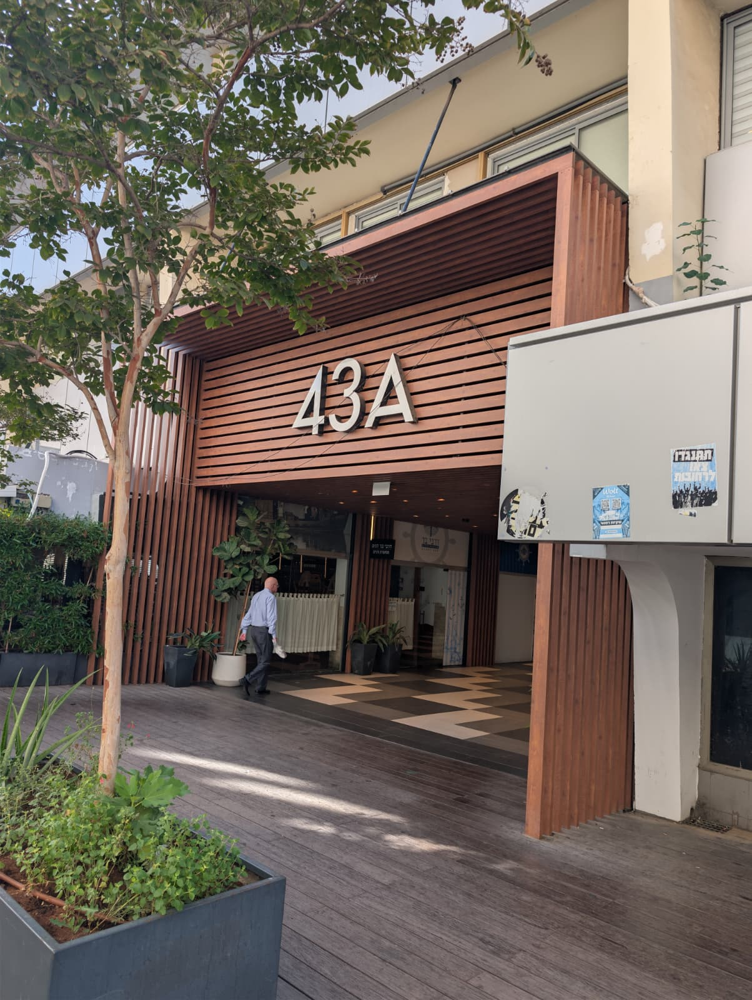

מדריך קצר מהבית עד לדלת המרפאה — כולל ניווט, וההליכה בתוך הבניין צעד־צעד.
איך מגיעים אלינו
מדריך צעד־צעד מהכניסה שלכם עד דלת המרפאה
תל אביב
מאיפה אתם מגיעים?
בחרו נקודת התחלה, ונראה לכם את הנתיב המדויק מהיכן שאתם עומדים.
הנתיב שלכם
חמישה צעדים מכניסה A עד דלת המרפאה.

הגיעו לכניסה A
מרחוב ברודצקי — הכניסה הראשית, מסומנת בגדול "43A".

תגיעו לרחבה מול 43A
יציאת הקניון מובילה לרחבה החיצונית, מול חזית הבניין המסומנת "43A".

בלובי, פנו לכיוון המעליות
מכל כניסה — שילוט כחול יכוון אתכם ללובי המעליות המשותף.

בלובי, פנו לכיוון המעליות
מכל כניסה — שילוט כחול יכוון אתכם ללובי המעליות המשותף.

עלו במעלית לקומה 5
לוח הדיירים שליד המעלית מציג את ד"ר מיקי לוריאן בקומה 5, יחידה 9.

בצאתכם מהמעלית, המשיכו במסדרון עד הסוף
הספרה הירוקה הגדולה "5" על הקיר מאשרת שהגעתם לקומה הנכונה.

דלת המרפאה — יחידה 9
השלט השחור עם הלוגו ושם ד"ר לוריאן נמצא ליד דלת הזכוכית. אין צורך לצלצל.

הגעתם!
התייצבו בקבלה, ואנחנו נדאג להמשך.